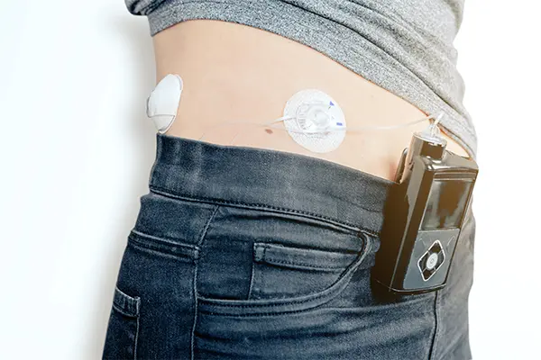

お知らせ
NEWS-
2026.08.19
9月26日(土)午後休診のお知らせ - 9月26日(土)院長学会参加のため午前診療のみ（午後休診）となります。
早めの診察予約お願いします。
-
2023.10.18
電話再診による処方箋交付終了のお知らせ - 厚生労働省の通知により、新型コロナウイルス感染拡大防止の観点から慢性疾患等を有する定期受診の方に対して臨時的な措置として電話診療による医薬品の処方箋発行をしておりましたが、5類感染症に移行したため、終了致しました。
-
2023.05.08
2023年5月8日以降の院内でのマスク着用について - 2023年5月8日より新型コロナウイルス感染症が『第5類感染症』へ移行されましたが、当院へのご来院（受診・付き添い）の際は、引き続き不織布マスク着用・来院時の手指消毒をお願いしております。
院内での感染拡大防止のため、ご協力をお願いいたします。
-
2023.04.11
当院の休診日について - 当院は日曜、月曜、祝祭日が休診です。土曜は午後も診療を行っております。
月曜に電話での問い合わせを多くいただいておりますが、休診日のご対応はしておりません。
診療時間（AM8時～PM4時）内にお電話いただきますよう、ご周知のほどよろしくお願い致します。
-
2023.02.02
初診のご予約について - 紹介状をお持ちでない方は電話でご相談ください。紹介状をお持ちの方はweb予約が可能です。当日必ずご持参ください。健診二次検査をご希望の方は電話予約をお願いします。
電話011-205-0811（AM8時～PM4時）
当院概要
CLINIC
診療時間
月火水木金土日
08:00～12:30／●●●●●／
14:00〜16:00／●●●●●／
休診日：月曜日・日曜日・祝日
※受付時間は午前12:00まで、午後15:30まで
※予約制での診療となります
『かぜ症状』で受診される方へ
来院前には必ず『電話でのご連絡』をお願い致します。
ご症状に応じたお薬の処方(対症療法)が主体となります点ご留意ください。
当院の特徴
FEATURE
01
札幌中心部で
札幌中心部で
アクセスしやすい
高血圧・脂質異常症・高尿酸血症・肥満症・糖尿病など、生活習慣に関わるさまざまな疾患の診療を行っています。
02
朝8時からの診療
出勤前にも受診いただける診療時間を設けています。
また、土曜日は午後も診療を行っておりますので、平日の受診が難しい方にもご利用いただきやすい診療体制を整えています。

03
1型糖尿病患者が多数通院
1型糖尿病の患者さまにも多く通院いただいています。
04
女性医師・
女性医師・
スタッフが対応
糖尿病専門医1名を中心に、糖尿病療養指導士3名（看護師2名・管理栄養士1名）が在籍し、多職種で連携した糖尿病診療を行っています。
05
インスリン・CGMの
インスリン・CGMの
外来導入が可能
インスリン療法やCGM（持続血糖測定器）の導入を、外来で行っています。
患者さまのライフスタイルに合わせた治療をサポートします。